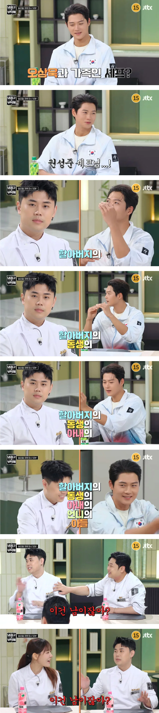

오상욱 작은할아버지 = 맛피자 이모부
오상욱 작은할머니의 조카 맛피자

오상욱 작은할머니의 조카 맛피자
7촌간이네
그렇긴 한데 중간에 혼인관계가 있어서 오상욱이랑 맛피자는 결혼 가능함!
오~ 는 무슨 야발
공은 그런게 취향이시오?
오~
기적의 논리
아. 빵 터졌다.
최익현이랑 최검사 보단 가깝네 ㅋㅋㅋ
사돈관계지 뭐
느그아부지, 우리 형님의 할부지의 9촌동생의 손자가 바로 익현씨인기라
마 큰절한번 올려봐라!

작은할머니의 조카라고하면 또 글케 먼느낌은 아니네
ㅇㅇ 존나 설명이 장황해서 그렇지 작은할머니 조카면 뭐 ㅋㅋㅋㅋㅋㅋ 쌩판남은 아님
오상욱 사기캐..
존나잘생겼네 시발
작은 할머니 친정조카긴 한데, 일반적으로 따지면 남이긴 해.
그래도 집안끼리 왕래가 있다면 먼 친척정도로 봐도 될 듯.
교류할려면 할수있는정도네
나이들면 남인수준이지만 어릴떈 만난적은잇을거같은 수준이지
현재도 대충 할아버지/할머니 항렬이 살아계시고 이래저래 묘 관리하는 선산이 있고 본가나 처가나 꼬박꼬박 명절 챙긴다 하는 집안분위기면 딱 저정도까지는 충분히 만나고 살긴함
xx동 이모할아버지 xx동 왕할머니 뭐 이런 지역명 붙은 호칭있고 ㅋㅋㅋ
우리집도 작은집이랑 가깝고 자주 봤었는데 작은할머니 조카는 만날 일이 없음.. 당숙이나 고모 결혼이나 잔치때 분명 오다가다 같은 공간에 있었겠지만 존재 자체를 모름 ㅋㅋ
7촌 정도면 서로 알면 가족이고 안친하면 존재도 모름ㅋㅋ
ㅋㅋㅋㅋ영상에서는 엄청 멀어보이는데 작은할아버지가 이모부라고하니깐 급가까워보이네 ㅋㅋㅋㅋㅋㅋ